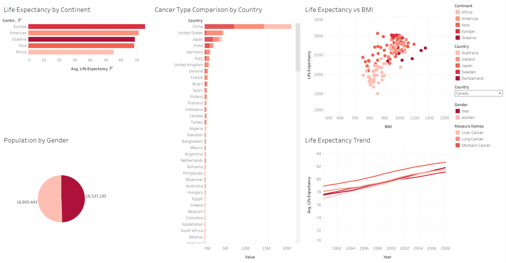

Tableau Projects
I applied the skills developed during my training to different datasets, using Tableau to create interactive visualisations and communicate analytical findings.
Spotify Features Analysis
I analysed Spotify data to explore patterns in music popularity, genre, danceability, track characteristics and artist performance.

The dashboard explores which genres and artists have the highest popularity and examines how characteristics such as danceability, duration, energy and acousticness relate to music popularity.
Global Health Data Analysis
I analysed global health data to investigate differences in life expectancy, population, cancer types and other health-related measures across countries and continents.

The dashboard compares life expectancy across continents, explores cancer types by country, examines population by gender and investigates relationships between life expectancy and other health measures.